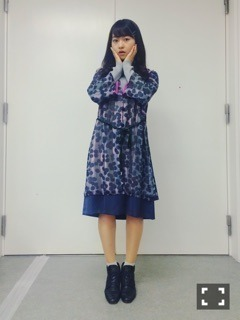
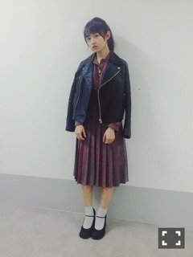

| 2015/11 30 Mon | 魚の葉。681回目 |
乃木坂46、紅白歌合戦の出場が
決定いたしました！
来年、良いスタートが切れそうです。
応援よろしくお願い致します。

ぶん
昨日は握手会〜
早速お祝いの言葉
ありがとうございました！

ワンピース io
タートル jouetie
靴 used
H.P.FRANCE系列は服の他、
家具や雑貨は昔からだいすき。

ライダース my panda
ワンピース used
パンプス vintage
古着のライダースもあるのですが、
大きくて重たいよ、可愛いけどね！
ワンピースのプリーツの
裏側の赤が可愛い！
動いてるとよくわかるんだ〜
プリーツのものが増えた
毎日寒いけど、服を考えるの
楽しいから全然平気だな！
さゆの生誕祭に参加しました(^.^)
手紙の内容の方が長いけど、
伝えたいことを伝えられて
よかったです！
本当に思ってることだからね。
早く二十歳になりたい
今しか言えないことばー

最近モバメで寄り目多いね
ってたくさん言われたけど、
無意識だった！
普通の写真を送ることも考えよう。
明日から12月に突入します！
2015年、良い年だったとなるように
ライブもイベントもお仕事も
悔いのないよう楽しむ！！
12月は雑誌掲載多いです〜
まりか
コメント(452)
2015/11/30 23:45